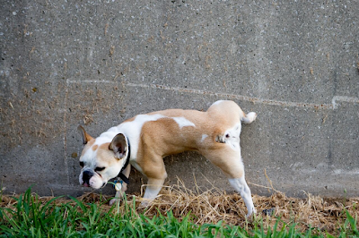

"lo más natural"
El perro es un animal mamífero y cuadrúpedo que fue domesticado hace unos 10.000 años y que, actualmente, convive con el hombre como una mascota. Su nombre científico es Canis lupus familiaris.
Los perros descienden de los lobos. Se cree que de manera espontánea, por su natural acercamiento al hombre, comenzó el proceso de domesticación. Así, el hombre empezó a alimentar al perro y a permitirle vivir bajo su mismo techo, modificando las conductas del animal.
Los perros son seres sociables y viven en manada con otros perros o con humanos. Suelen vivir unos 13 o 15 años y, algunos como los de raza pequeña, llegan a los 17 años. La calidad de vida, tanto por la alimentación como por los cuidados de su salud, es un factor de influencia para la expectativa de vida.
Los perros machos suelen dejar rastros de orina cuando pasean por lugares ajenos a su hogar, para reconocer el camino a la vuelta. También lo hacen para delimitar su territorio ante otros perros.
El olfato y el oído son los sentidos más desarrollados en el perro. Los caninos pueden detectar sonidos que son inaudibles para el ser humano, además de ser capaces de distinguir aromas que aparecen en una concentración unas cien millones de veces más pequeña que aquellas que captan las personas. Gracias a estas características, los perros pueden ayudar al hombre a detectar drogas o explosivos a través de su olfato.
A dichas características físicas se suma su vista, la cual funciona de una forma bastante diferente a la del ser humano, ya que les permite detectar con más facilidad objetos en movimiento pero los vuelve menos eficaces para entender aquéllos que se encuentran en estado de reposo.
Los perros son carnívoros, al igual que sus antepasados, los lobos. Tienen 42 dientes diseñados para desgarrar a sus presas. Entre los cuatro y nueve meses de vida suelen cambiar su dentadura por los dientes definitivos.
Debido a la domesticación por parte de los humanos, también suelen comer verduras o cereales cocidos, como el arroz, y alimentos balanceados que concentran todos los nutrientes necesarios para mantener su buena salud.
Las razas de perros reconocidas de manera formal superan los 400 tipos en todo el mundo, según la Federación Cinológica Internacional (FCI) que se encarga de controlar y fomentar el pedigrí de los perros, y reconoce los siguientes diez grupos generales:
Grupo 1. Perros tipo pastor y boyeros.
Grupo 2. Perros tipo Pinscher y Schnauzer.
Grupo 3. Terriers.
Grupo 4. Teckels.
Grupo 5. Perros tipo Spitz y primitivo.
Grupo 6. Perros tipo sabueso, de rastro y similares.
Grupo 7. Perros de muestra (con habilidad innata para cazar).
Grupo 8. Perros de caza en agua y levantadores.
Grupo 9. Perros de compañía.
Grupo 10. Perros capaces de correr a gran velocidad (lebreles).
Además de los perros considerados de raza existen, muchos perros que surgen de las más diversas cruzas, en especial, los callejeros.
Como debería ocurrirnos a todos los seres vivos, los perros disfrutan mucho del contacto con la naturaleza. Los afortunados que viven en zonas rurales suelen desarrollar sus habilidades a límites difíciles de imaginar para los perros de ciudad: es entre árboles, colinas y verdes llanuras donde el perro puede hace uso de su sentidos y de su increíble agilidad. La fuerza y la resistencia de este animal son también dignas de ser admiradas, y en el asfalto rara vez se vuelven necesarias.